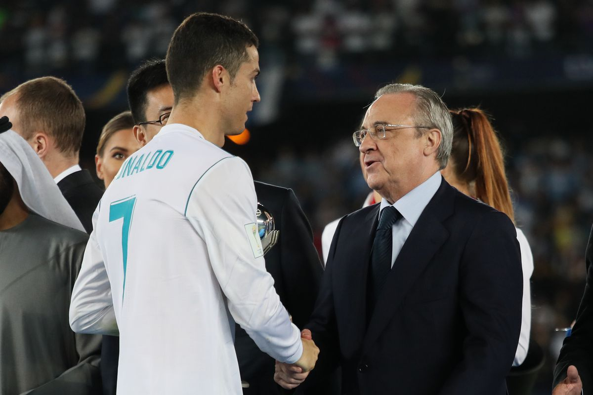
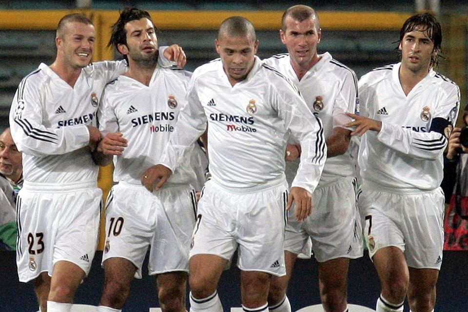
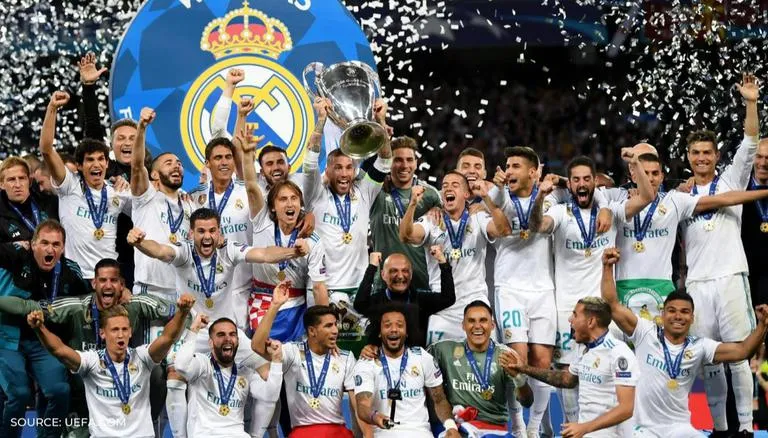

“The Real Madrid shirt is white. It can stain of mud , sweat and even of blood but never of shame” - Santiago Bernabeu. No other club or organization enjoys the dominance that the great whites do in the dominion of football. Real Madrid Club De Football , based in the city of Madrid under the watchful eyes of goddess Cibeles , have established themselves as the juggernaut of modern football. The club , founded in the year 1902 , has always been what we know as the aristocracy in football. Only a handful of the most talented footballers of all time have had the good fortune of putting on the royal white jersey and stepping on the hallowed pitch of the Santiago Bernabeu. Now considered this humongous juggernaut in football , this club has had it’s fair share of ups and downs. The establishment of their most hated rivals FC Barcelona of Catalunya & city rivals Atletico Madrid CF has always been a thorn in the side of Los Blancos. The fans of Real , fondly called ‘Madridistas’ , expect nothing less than a dominant victory every time their side steps on the pitch. While that is appreciable , sometimes it can get a bit out of hand for players who aren’t playing at their ceiling standard , just ask Gareth Bale. To the newer and younger audience , it has always been a question as to why this club is so powerful , what makes them so attractive over the recently money rich & more lucrative prospects like Manchester City and Paris Saint Germain. That is indeed quite the story.
‘Real’ in Spanish means Royal. The club has always enjoyed the patronisation of the kings and monarchs of Spain , even during the World Wars. The Bernabeu has always served as the temple to fans , executives , players alike. Madrid are also fondly known as ‘Los Vikingos’ referring to their rampant 5-peat when the European Cup was founded in 1955 with many journalists referring to their performances as the Vikings roaming through Europe , flattening everyone and everything in their path. The club are also nicknamed ‘Los Merengues’ referring to the white French dessert , a staple of many a kingdom in medieval Europe. Before gaining the royal patronage , Real were simply known as ‘Madrid Football Club’ winning the Copa Del Rey or the King’s Cup , Spain’s oldest tournament , in their first season while finishing runners-up to FC Barcelona in the first La Liga season. Who knew that something founded by a group of Oxford graduates in Moncloa would one day become something this enormous and gigantic? In addition to their domestic success which includes a record 34 league titles , the club is also credited with outstanding performances and dominance over the continent, Holding a record 13 European championships to their credit , the club has enthralled the majority of Europe with some delightful and dominant performances , well maybe not a certain part called Catalunya. A slew of legends and hall of famers have gone on to wear the royal white jersey and be adorned into immortality. Namely Alfredo De Stefano and Ferenc Puskas , two men instrumental in the club’s early dominance in Europe. The former still holds the record for the most goals scored in European Cup finals by a Real Madrid player while the latter is the fourth highest official goalscorer in all eras of the game. De Stefano would go on to win the coveted Ballon D’Or award twice while at Madrid and also serve as the honourary president of the club from the year 2000 with an aim to replicate the success he had as player with the great whites. As mentioned , the club has always had its fair share of ups and downs. The next European cup until 1966 . What made it so special was that it was won by a very young team of homegrown and fresh talent , fondly nicknamed the ‘Ye-Ye’ starring the Mexican superstar Hugo Sanchez. The one perennial server from the two eras of the club was club captain Paco Gento , the Spanish wing wizard still being the only footballer on earth to win a record 6 European Cups. Followed a period of droughts on the European stage with Madrid not getting their hands on the coveted European Cup , now rebranded to the UEFA Champions League , for 32 years , a huge anomaly to their rich European vein. German manager Jupp Heynckes was the one to break the jinx and bring the elusive 7th European Cup home. A team filled with brimming young stars like Raul , Roberto Carlos , Fernando Hierro and Fernando Redondo with the addition of the prolific Fernando Morientes. All having stellar careers with Raul going on to be the club’s record goalscorer and appearance maker of all time. Carlos would develop into the greatest left-back the world ha ever witnessed while Hierro would become club captain and one of the most dependable centre backs across Europe. But nobody had foreseen what would follow.
PEREZ AND RONALDO
Enter the ambitious Florentino Perez , replacing Lorenzo Sainz as club president, The man followed the idea that the world’s best footballers would only play for Madrid , serving as the makers of the club's next great legacy of supreme dominance or in simpler words , serving as the club’s ‘Galacticos’. The squad began to take shape into a mammoth with the immediate arrival of Luis Figo from arch rivals Barcelona. An unfathomable world record amount of money was spent on Juventus and France midfield maestro Zinedine Zidane , a jaw dropping 75 million euros. Zidane was regarded as the best player in the world at that time. Immortalizing himself in the Madrid history books by scoring an outrageous volley against Bayer Leverkusen in the 2002 European Cup final , he was the only player among these superstars to have retired as a Real Madrid player. Real Madrid became a record 9 time European Champion in front of a roaring Hampden Park thanks to Zidane , fondly called ‘Zizou’. What made this win extra special was the fact that in goal was a 19 year Spanish boy , picked straight out of school by the name of Iker Casillas. A man who would later go onto captain both Madrid and Spain , make over 600 appearances for the whites. Casillas would go on to become one of the greatest goalkeepers of all time. He won countless golden gloves individually and still happens to be the only goalkeeper in the sport to have won every trophy possible. Captaining Spain to both the World Cup and the Euros , Casillas cemented himself as a bonafide legend of the sport.
‘THE GALACTICOS'
Followed many more blockbuster signings throughout the years like the Brazilian superstar Ronaldo and David Beckham , probably the most famous man on earth at that time. The club would go on to win LaLiga in the 2003-04 season with their ‘Galacticos' unit . Followed a period of internal turmoil with many huge signings failing to live upto the billing like former Liverpool stars Steve Mcmanaman and Michael Owen. This was also the period of the rise of Barcelona with their stars like Ronaldinho , Xavi , Andres Iniesta and a very young prodigy called Lionel Andres Messi. Probably the most hated name in the streets of Madrid. Madrid had fallen off dramatically from their enormous standards and none of their signings were working. But they did splash out 30 million Euros to Sevilla Football Club for a young Spanish centre back at that time , a certain Sergio Ramos Garcia , which went a bit unnoticed. He wouldn’t go unnoticed though. The failures continued on the pitch. The club’s Galacticos formula had not lived upto the expectations while Barcelona were running riot both domestically and in Europe. This ultimately led to Perez resigning and to be succeeded by Ramon Calderon as the club president. Having made some underrated signings of young players as opposed to his predecessor , Calderon managed to win the league in 2007. Players like Gonzalo Higuain , Wesley Sneijder and Marcelo lit up the Bernabeu. But the European barren run continued for Real. Barca had just won the Champions League and were dominant over them in all aspects , led by the diminutive yet magical Leo Messi. Unable to change the fortunes of the club and having lost Laliga again to Barcelona in 2009 , Calderon stepped down and Perez returned to his seat. Bringing with him a new era of the Galacticos with the arrivals of Kaka from AC Milan , Karim Benzema from Lyon and Cristiano Ronaldo from Manchester United. The two previous Ballon d’Or winners. Ronaldo would go on to become Madrid’s topscorer of all time , amassing an astounding 450 goals in just 438 appearances while winning 5 Ballon d’Ors while with the club and a record 5 Champions League titles , equalling him with Paolo Maldini as the only men to have won the new tournament the most times. He also built a telepathic partnership with Benzema throughout their careers. This era brought considerable success with Ronaldo’s compatriot , Jose Mourinho being hired as the manager & being tasked to overcome Pep Guardiola and Barcelona. Jose managed that in the 2011-12 season , building a side which won LaLiga with a record 100 points and 121 goals scored all season , a blistering side with the youth of Karim Benzema , Mesut Ozil , Ronaldo , Khedira , Angel Di Maria , Sergio Ramos and the likes, The team , regarded by many as the best Real Madrid side ever , ran through the opposition domestically. Heartbreakingly , they lost in the Champions League semi finals to Bayern Munich on penalties.

CHAMPIONS LEAGUE GLORY
It wasn't until the 2013-14 season that Real could complete La Decima or what was known as the 10th European Cup up against city rivals and domestic champs Atletico in Lisbon. With the club trailing 0-1 all the way till the end , it ended up having a fairytale ending with Sergio Ramos leaping over the entire Atletico backline to head the ball in to send the crowd into pandemonium. The match would go on to finish 4-1 to Los Blancos after extra time and Ramos would fondly be called “Mr. 92:48”. Iker would lift the trophy in Lisbon. The man who always made the difference , Ramos would go on to score again against Atletico in Milan in the 2016 Champions League final. He would leave the club as one of it’s greatest servers , making record appearances and being heralded as the greatest centre back of modern football. Succeeding Casillas , Sergio was made the captain of the club but it seemed like another bleak period was about to follow when Madrid ended up trophyless in 2015 while the deadly trio of Messi-Neymar-Suarez led Barca to a treble. Ancelotti was sacked and succeeded by Rafa Benitez but nothing had changed. Perez made the emergency call to appoint club legend and academy coach Zinedine Zidane as the first team head coach, Turned out to be a revolutionary decision. By the time Zidane left , he had created history. Madrid had gone on an unbelievable run of 3 back-to-back Champions League trophies destroying the entirety of Europe on their way. He created a legacy , restoring Madrid to again being a juggernaut. Real were once again the most feared team in Europe , destroying Atletico , Juventus and Liverpool in consecutive finals. The club had turned on its head , going on a league of its own. A class apart. The club had found its stranglehold back over Europe. Each of the players were lauded with multiple European Cups to their name. This is the story behind the footballing giant that is Real Madrid. The club that can endure a transition period and yet can attract the world’s most talented young players. When you’re a footballer , your dream , not even your aim , should be Madrid because only a select few get the good fortune. It’s beyond imagination to play inside the footballing temple that is the Bernabeu for a young upstart. As a fan for any person , it's a privilege to support this great club , it’s a privilege to back this institution , it’s a privilege to be associated with this club. Such is the phenomenon that is Real Madrid Club De Fútbol , such is the myth that is Real Madrid.
Anurag Sadhya
Kalinga Industrial Institute of Technology
anuragsadhya2001@gmail.com